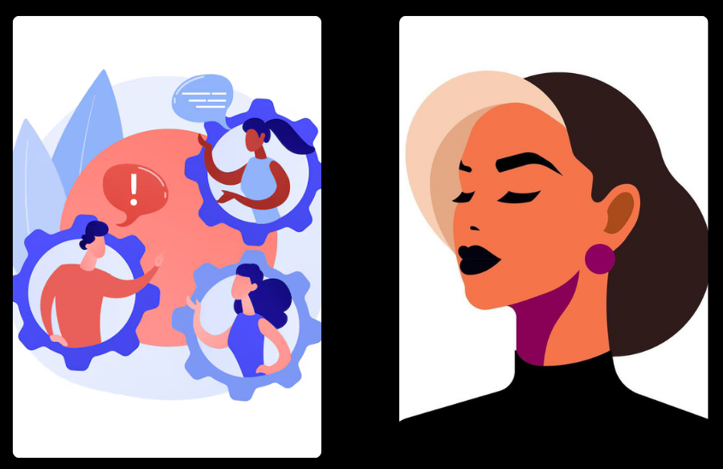
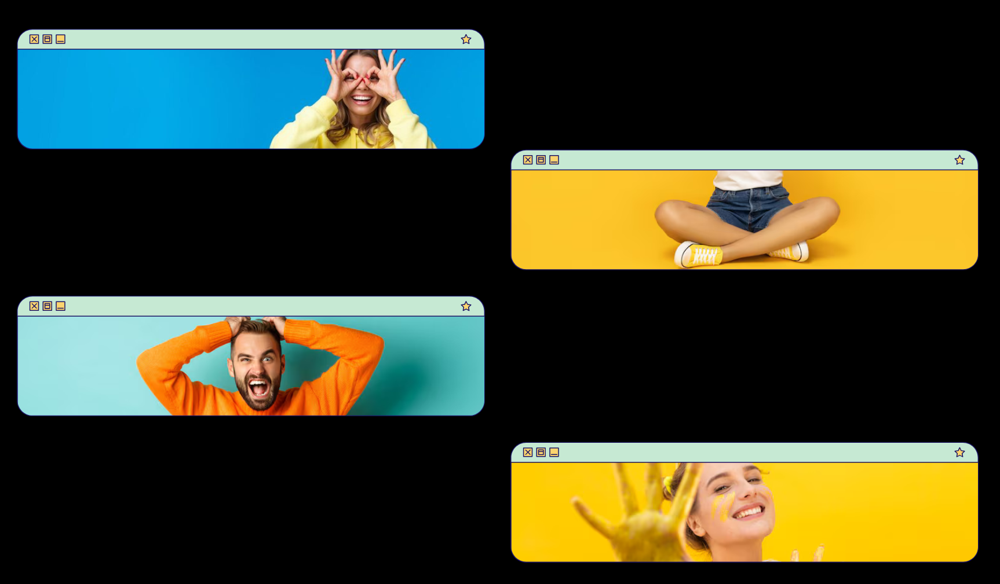

QUEM SOMOS
Somos uma mentoria em linguagem corporal e comportamento humano que ajuda você a se comunicar melhor na vida e no digital. Ensinamos, de forma prática, como ler gestos, identificar intenções e usar a comunicação não verbal com mais segurança e autenticidade.

MISSÃO
Desenvolver a comunicação das pessoas por meio da linguagem corporal e do comportamento humano, ajudando a ler gestos, entender intenções e se expressar com mais segurança e clareza.

VISÃO
Ser referência em comunicação não verbal aplicada, capacitando pessoas a se comunicarem melhor, com mais consciência emocional, influência positiva e presença.

VALORES
• Clareza: comunicação simples, direta e consciente
• Autenticidade: coerência entre o que se sente e se expressa
• Empatia: respeito às emoções, contextos e diferenças
• Desenvolvimento humano: crescimento pessoal e emocional contínuo
• Aplicação prática: aprendizado que gera ação real
• Responsabilidade: interpretação ética e contextual do comportamento

COMO FUNCIONA
A mentoria acontece de forma prática e personalizada, focada em situações reais do seu dia a dia. Primeiro, entendemos seus objetivos e desafios de comunicação. A partir disso, você aprende a observar gestos, posturas, expressões e comportamentos.
